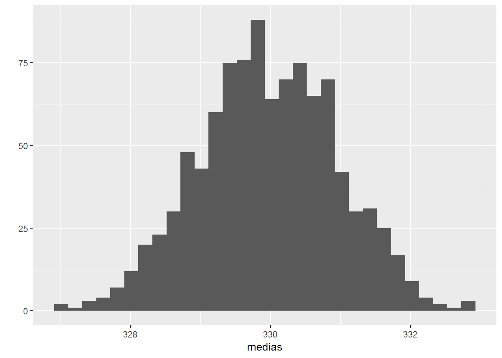
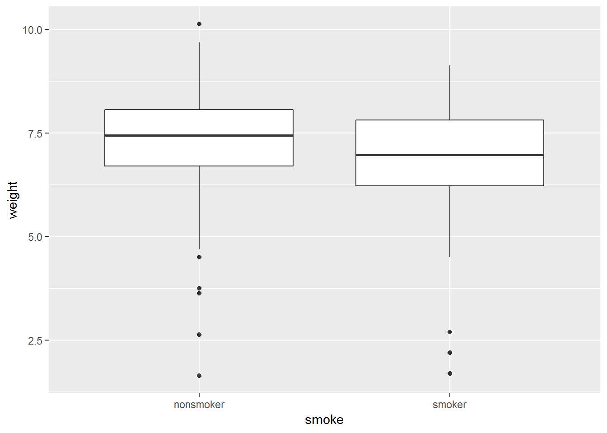

3 Inferencia sobre medias
En estadística, la Inferencia es el conjunto de técnicas para extraer conclusiones sobre la población a partir de una muestra (metáfora de la sopa).
Muestreo versus Inferencia
Test sobre una media
Planteamiento
Queremos contrastar si la media poblacional \(\mu=330\) ml a partir de la observación del volumen medio \(\overline{y}=327.5\) ml en una muestra de 25 botellas.
Hasta que punto podemos confiar en el valor observado del volumen medio? O en otras palabras, ¿cómo varia \(\overline{y}\) de una muestra a otra?
Teorema central del limite
- El error estándar (o error de estimación) de \(\overline{y}\) es proporcional a la desviación típica \(\sigma\) de los datos: \[\mathrm{se}\left(\overline{y}\right)=\frac{\sigma}{\sqrt{n}}\]
- Además, cuando \(n\) es “grande”“, tenemos que \[\overline{y}\sim N\left(\mu,\frac{\sigma}{\sqrt{n}}\right)\] donde \(N\left(\mu,\sigma\right)\) denota la distribución normal con media \(\mu\) y desviación típica \(\sigma\).
## Distribución de la media muestral en muestras de 25 botellas
K=1000 #número de muestras
medias=replicate(K,mean(rnorm(25,330,5)))
summary(medias) #distribución de las medias ## Min. 1st Qu. Median Mean 3rd Qu. Max.
## 327.0 329.3 329.9 330.0 330.7 332.8sd(medias) #error estándar de la media muestral (teoricamente = sigma/sqrt(n)=5/sqrt(25)=1)## [1] 0.983899qplot(medias)
Una horquilla para la media poblacional
El intervalo de confianza es una horquilla que permite reflejar la precisión en la estimación.
Típicamente, un intervalo de confianza (del 95%) de la media poblacional tiene la forma: \[\overline{y}\pm1.96\times\mathrm{se}\left(\overline{y}\right)\] donde \(1.96\) corresponde al cuantil 97.5% de la distribución normal \(N\left(0,1\right)\).
La confianza del intervalo corresponde a la proporción de muestras (entre todas la muestras posibles de tamaño \(n\)) para las cuales el intervalo así construido contiene la media poblacional \(\mu\).
Test de Student
Sin embargo, en practica la desviación típica \(\sigma\) es desconocida y requiere ser estimada para construir el intervalo de confianza. Al sustituir \(\sigma\) por su estimación en la muestra \(s=\)sd(y) en la expresión del error estándar de \(\overline{y}\), se obtiene el siguiente intervalo de confianza (del 95%): \[\overline{y}\pm t_{(n-1),97.5\%}\times\frac{s}{\sqrt{n}}\] donde \(t_{(n-1),97.5\%}\) es el cuantil 97.5% de la distribución de student con \(n-1\) grados de libertad.
Nota: Cabe mencionar que si \(n\simeq200\), la distribución de Student \(t_{(n-1)}\) es muy próxima a la normal y tenemos que \(t_{(n-1),97.5\%}\simeq1.96\)
¿Cuando usar el test de Student? Si las observaciones son independientes y casi normales. Si estas condiciones no se cumplen se puede utilizar el test (no-parametrico) de Wilcoxon (más detalles en
?wilcox.test).
### Utilización del Test de Student en R ####
muestra=c(326.4,324.5,319.2,332.9,328.9,331.3,327.4,323.6,322.7,323.9,325.3,329.6,338,328.8,327.6,333,333.7,335.6,319.2,320.2,327.9,330.3,326.9,320.2,330.4)
t.test(muestra,mu=330) #contrasta si mu=330##
## One Sample t-test
##
## data: muestra
## t = -2.4522, df = 24, p-value = 0.02185
## alternative hypothesis: true mean is not equal to 330
## 95 percent confidence interval:
## 325.3959 329.6041
## sample estimates:
## mean of x
## 327.5t.test(muestra,mu=330,alternative="less") #contrasta si mu>330##
## One Sample t-test
##
## data: muestra
## t = -2.4522, df = 24, p-value = 0.01093
## alternative hypothesis: true mean is less than 330
## 95 percent confidence interval:
## -Inf 329.2442
## sample estimates:
## mean of x
## 327.5mean(muestra)+sd(muestra)/sqrt(length(muestra))*qt(.95,24) #cálculo a mano del limite superior del IC (95%)## [1] 329.2442El p-valor
- Una manera de medir la credibilidad de la hipótesis \(H_{0}:\mu \geq 330\) ml, consiste en calcular la probabilidad (en caso de que \(H_{0}\) fuese cierta) de observar algo que discrepe más de esta hipótesis que lo que observamos.
- Si es inferior al nivel de significación establecido (\(\alpha=5\%\)), rechazamos la hipótesis nula \(H_{0}\).
- En el ejemplo anterior observamos \(\overline{y}=327.5\) ml, por lo tanto la probabilidad de observar algo aún más alejado de la hipótesis \(H_{0}:\mu \geq 330\) sería: \[p=P\left(\overline{y}<327.5|H_{0}\mbox{ cierta}\right)=\mathsf{pt\left(-2.45,24\right)}\simeq1.1\%\]
Comparando medias
En el ejemplo anterior, comparamos la población de estudio con una población de referencia o teórica (las botellas producidas con las botellas que esperamos observar si la maquina está bien calibrada).
Supongamos que queramos ahora comparar dos poblaciones en estudio (chicas versus chicos, grupo de tratamiento versus grupo placebo, …). En este caso, observaríamos dos muestras a partir de las cuales pretendemos decidir si hay diferencias entre las dos poblaciones de donde fueron sacadas.
A partir de la base de datos births de la librería openintro se pretende contrastar el efecto del habito de la madre con el tabaco sobre el peso del neonato.
require(openintro)
glimpse(births) #?births para más detalles## Observations: 150
## Variables: 9
## $ fAge <int> 31, 34, 36, 41, 42, 37, 35, 28, 22, 36, 27, 35, 25, ...
## $ mAge <int> 30, 36, 35, 40, 37, 28, 35, 21, 20, 25, 19, 34, 19, ...
## $ weeks <int> 39, 39, 40, 40, 40, 40, 28, 35, 32, 40, 32, 40, 41, ...
## $ premature <fct> full term, full term, full term, full term, full ter...
## $ visits <int> 13, 5, 12, 13, NA, 12, 6, 9, 5, 13, 5, 15, 13, 10, 1...
## $ gained <int> 1, 35, 29, 30, 10, 35, 29, 15, 40, 34, 32, 20, 47, 2...
## $ weight <dbl> 6.88, 7.69, 8.88, 9.00, 7.94, 8.25, 1.63, 5.50, 2.69...
## $ sexBaby <fct> male, male, male, female, male, male, female, female...
## $ smoke <fct> smoker, nonsmoker, nonsmoker, nonsmoker, nonsmoker, ...qplot(smoke,weight,data=births,geom="boxplot")
Se aprecia una diferencia entre los dos grupos, siendo los hijos de madres no fumadoras los que suelen tener mayor peso al nacer. Sin embargo, esta diferencia podría ser fruto del azar (del muestreo). Para evaluar si esta diferencia es significativo se puede aplicar el test de Student:
t.test(weight~smoke,data=births)##
## Welch Two Sample t-test
##
## data: weight by smoke
## t = 1.4967, df = 89.277, p-value = 0.138
## alternative hypothesis: true difference in means is not equal to 0
## 95 percent confidence interval:
## -0.1311663 0.9321663
## sample estimates:
## mean in group nonsmoker mean in group smoker
## 7.1795 6.7790Para un nivel de significación del \(5\%\), la diferencia observada no es significativa (el p-valor \(p=9.31\%>5\%\)). Sin embargo, se trata de un efecto importante:\(0.40\) libras, es decir una diferencia promedia de unos 200 gramos entre los dos grupos de neonatos, y merece mayor investigación. Acordarse del aforismo “Absence of evidence is not evidence of absence!”.
Muestrear la base de datos babies del paquete openintro de manera que los tamaños muestrales de los dos grupos (madres fumadoras y no fumadoras; quitar valores ausentes) sean sucesivamente \(n= 10,50,100,250\). Contrastar el efecto del tabaco sobre el peso del neonato para estos distintos tamaños muestrales.
Por defecto, se supone que las dos muestras son independientes (la opción paired=FALSEen la función t.test). Pero, si los dos grupos corresponden a medidas realizadas sobre los mismos individuos, esta condición no se cumple y el test de Student se ha de utilizar con la opción paired=TRUE.
######### Simulación de un ejemplo con muestras dependientes
nn=100
col0=rnorm(nn,200,50) #valor basal de colesterol
efecto = rnorm(nn,-10, 2) #efecto del tratamiento con estatina
col1=col0 + efecto #valor del colesterol despues del tratamiento
datos=data_frame(antes=col0,despues=col1) %>% gather(visita)
t.test(value~visita,data=datos) #test de Student para muestras independientes##
## Welch Two Sample t-test
##
## data: value by visita
## t = 1.2712, df = 198, p-value = 0.2051
## alternative hypothesis: true difference in means is not equal to 0
## 95 percent confidence interval:
## -5.482065 25.371169
## sample estimates:
## mean in group antes mean in group despues
## 200.6394 190.6948t.test(value~visita,data=datos,paired=TRUE) #test de Student para datos emparejados##
## Paired t-test
##
## data: value by visita
## t = 46.39, df = 99, p-value < 2.2e-16
## alternative hypothesis: true difference in means is not equal to 0
## 95 percent confidence interval:
## 9.519195 10.369909
## sample estimates:
## mean of the differences
## 9.944552